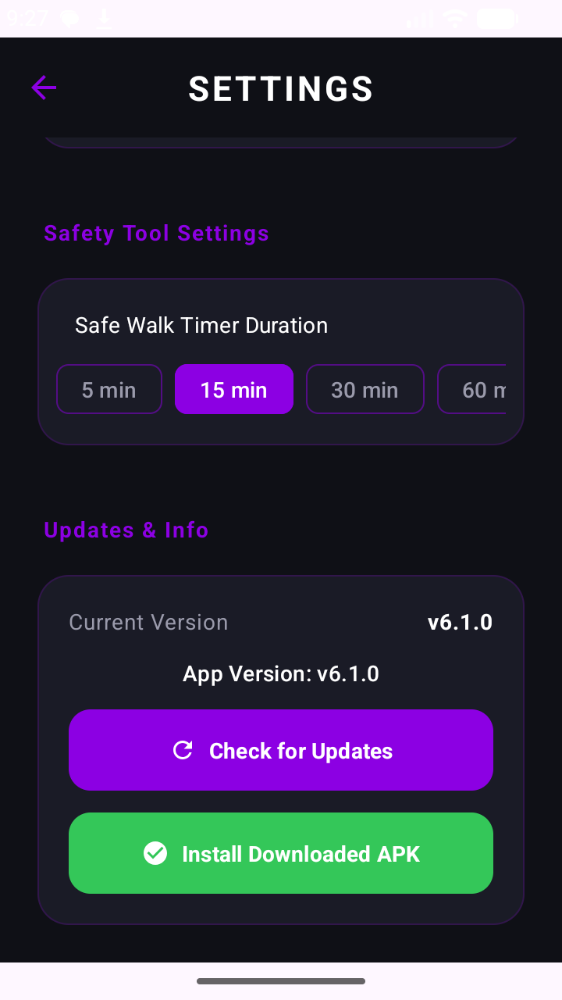
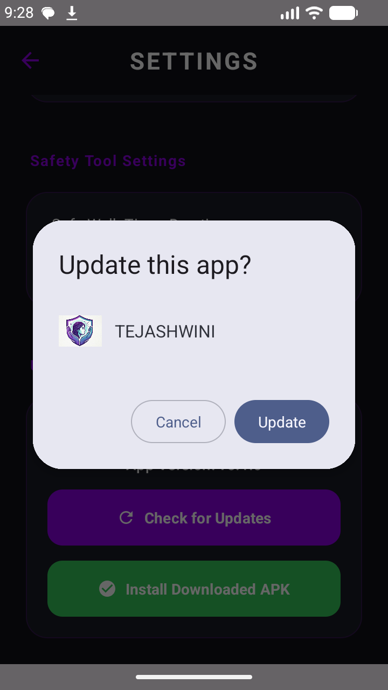

100% Free, Open Source & Private. Protect yourself and your loved ones with next-generation acoustic distress detection, automatic tracking beacons, and instant live GPS streaming.
Compatible with Android 7.0+ (API 24 to 34+). Designed & Built with Kotlin Jetpack Compose.
TEJASHWINI (AcousticGuard) is an advanced open-source Android safety guardian. Powered by Edge AI audio inference, Shake-to-SOS motion sensors, automatic live GPS transit beacons, and Remote Siren Sync, it turns your smartphone into a lifesaving personal shield.
Explore how TEJASHWINI's multi-layered safety mechanisms adapt to real-life emergency scenarios.
[TEJASHWINI_SOS_TRIGGER].Every tool is designed for extreme reliability, zero-latency local execution, and foolproof user experience.
Leverages TensorFlow Lite to process audio spectrum buffers directly on the CPU. Classifies human screams and distress yells with sub-second latency.
Multi-axis accelerometer sampling detects intentional violent shakes, triggering emergency protocols while keeping the phone inside your pocket.
Google Play Services Fused Location Provider client fetches high-accuracy satellite fixes and compiles universal Google Maps live navigation links.
Automatically forces guardian's phone to ring at 100% volume, wakes their screen, vibrates continuously, and provides a direct map link button.
Vibrates vigorously with a prominent 5-second countdown modal allowing the user to tap "I AM SAFE" and abort accidental triggers safely.
Configurable 5m, 15m, 30m, 60m countdown timer for unmonitored travel. Automatically dispatches the full emergency sequence upon timeout.
Authentic incoming call screen with realistic ringtone, vibration, and call timer to give you a natural reason to exit dangerous or uncomfortable spaces.
Disables sirens and camera flashlights while silently broadcasting live GPS tracking beacons and text alerts to guardians without alerting perpetrators.
Broadcasts a critical distress message with last known coordinates before your phone shuts down when battery percentage dips below 5%.
Connects to GitHub Releases, checks for new versions, downloads the APK via DownloadManager, and triggers the Android Package Installer in one click.
Tapping 'START TRACKING' automatically activates high-accuracy GPS and instantly dispatches an introductory Google Maps live link to trusted contacts.
Dedicated companion mutex handles ensure that pressing "STOP ALARM" on Mobile B instantly silences the siren and cancels vibration in 0ms.
Watch how the intelligent acoustic defense, satellite GPS beaconing, and remote guardian siren ringing perform in real-world scenarios.
Designed with high-contrast pure dark themes for optimal battery life and readability in dark environments.


Install the APK on your device and configure your trusted guardians' phone numbers to create an unbreakable safety shield.